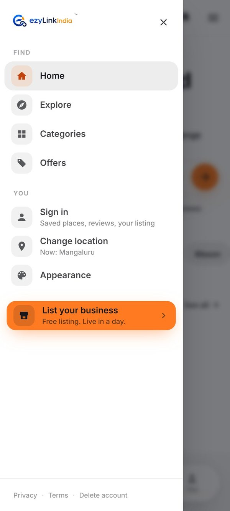
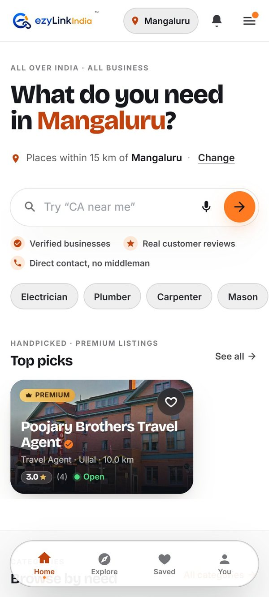
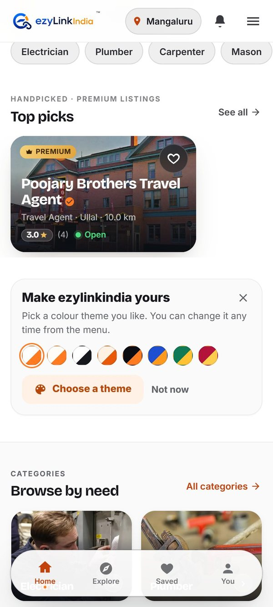
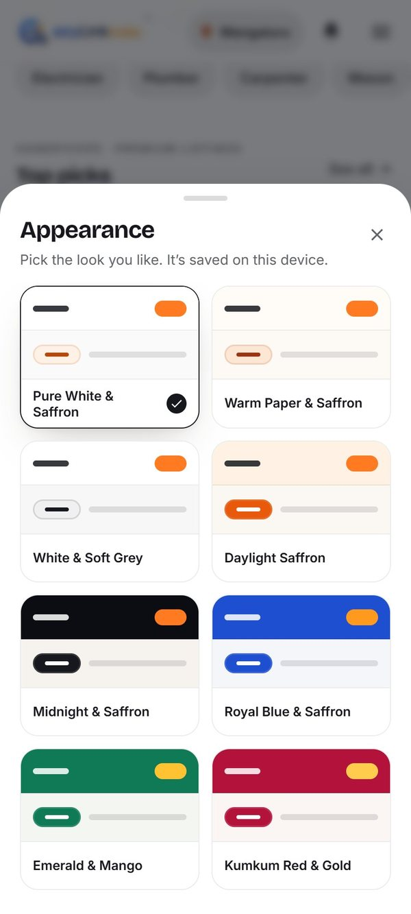
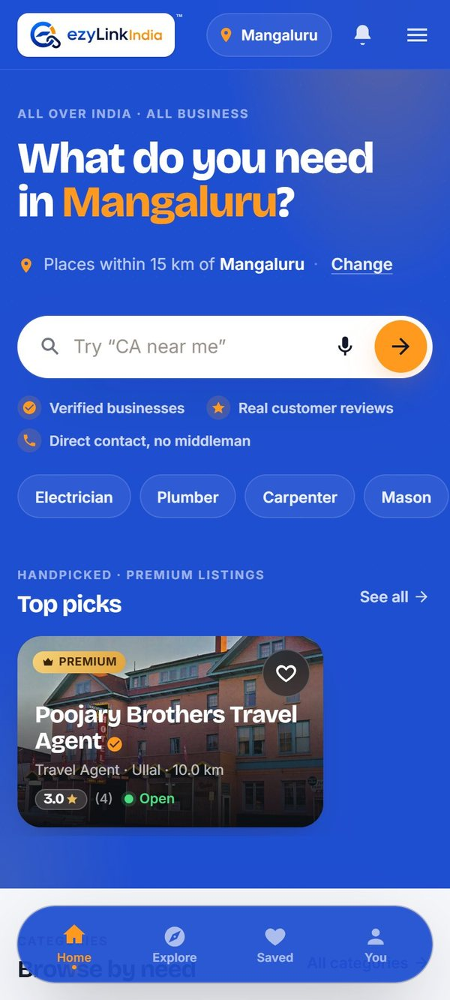
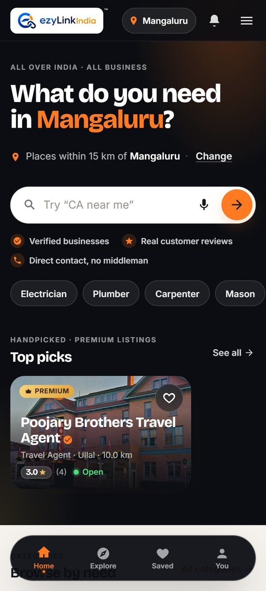
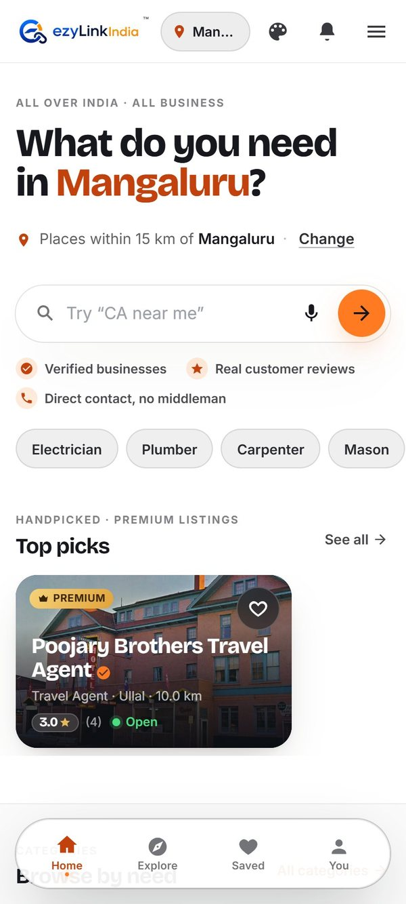
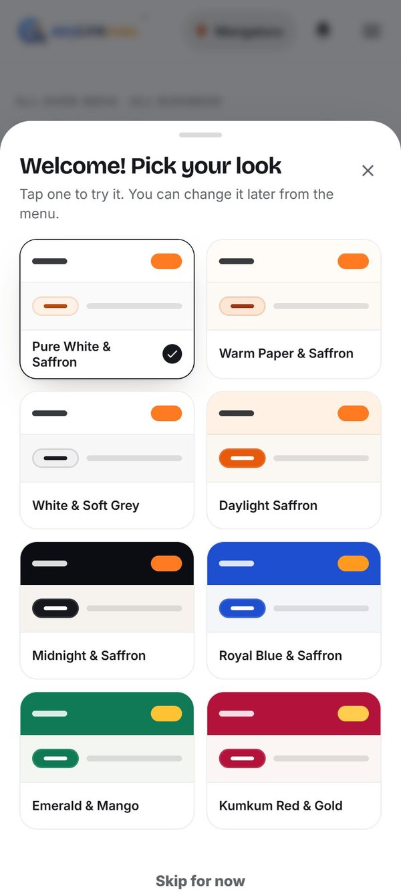

Helping people find the colour themes
Today "Appearance" only lives inside the menu, so a first-time user won't know the app has 8 themes. Below are four ways to tell them, shown on the real app. Nothing has been changed in the app yet; these are mockups.
My pick: Option 1 + Option 2 together. The dot catches people who open the menu, and the card reaches everyone else, once, without getting in the way.
Today
CurrentAppearance is a plain row in the menu (plus a footer link and a card on the You page). Nothing on the home screen hints at it.



Option 1 · "New" dot on the menu
Recommended- A small saffron dot on the menu button, and a NEW tag on the Appearance row.
- Both disappear for good once the person opens Appearance (remembered on the device).
- Quiet, costs no space, and people already know what a dot means.



Option 2 · One-time card on home
Recommended- A card with all 8 theme colours, placed under Top picks, so the paid Premium slider stays first.
- Shown from the second or third visit, not the first, so it never competes with a first search.
- "Choose a theme" opens the picker. The ✕ or "Not now" hides it forever, and it also goes away once a theme is picked.








Option 3 · Palette icon in the header
Not recommended- Always visible.
- The phone header gets crowded: the location pill shrinks to "Man…", and a palette icon is used once but takes space forever.


Option 4 · Picker on first launch
Not recommended- Everyone sees the themes.
- It's one more step before the person has seen a single business. Most people just tap Skip, and some leave.


Screens were taken from the live ezylinkindia.com at phone size, with the new pieces added in the browser for the mockup only. The Android app would get the same dot, NEW tag and card in its own screens. Tap any screen to see it full size.